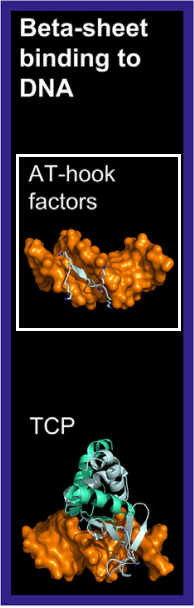

AT-hook factors bind DNA through an extended strand that inserts into the minor groove, particularly at AT-rich regions.
[src]
This class includes the HMGA family and the AHL family.
The HMGA family contains a central Arg–Gly–Arg core that deeply penetrates the minor groove
[src]
[src].
Plant HMGA proteins have four AT-hook motifs, with at least two required for efficient DNA binding
[src].
The AHL (AT-Hook Motif Nuclear-Localized) family is specific to land plants and possesses one or two AT-hook motifs.
Additionally, AHL proteins contain a PPC (Plant and Prokaryote Conserved) domain, which is involved in protein-protein interactions
[src]
[src].